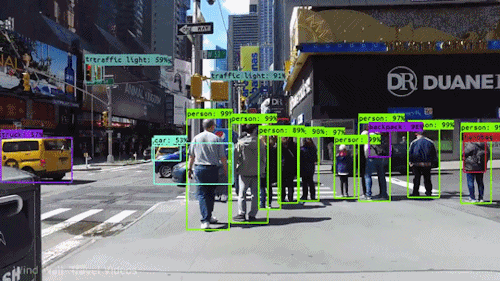
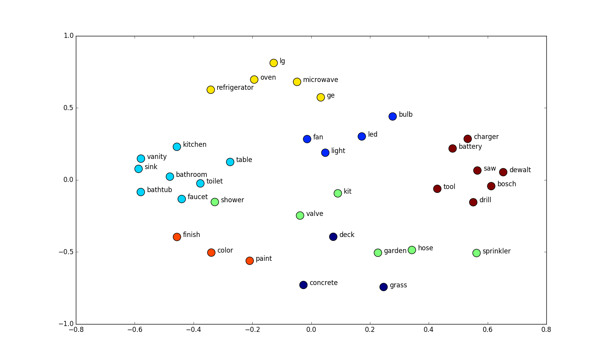
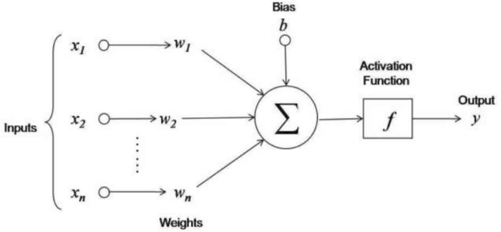
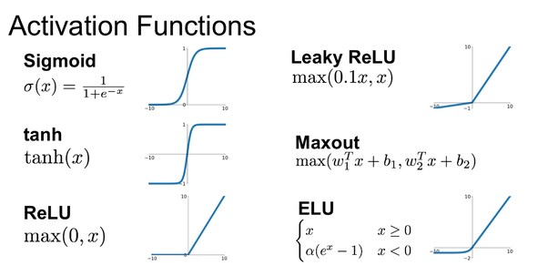
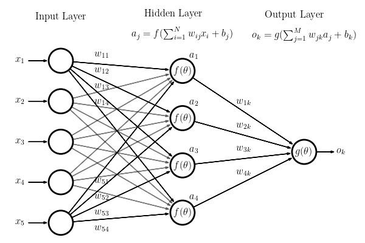
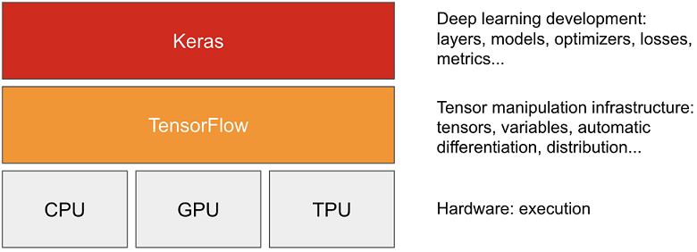

Fundamentals of DL
Démystifier le Deep Learning, comprendre l'architecture d'un réseau de neurones (neurone, couche, activation) et construire son premier modèle avec Keras/TensorFlow.
📋 Cheatsheet — Fundamentals of Deep Learning
Imports & Installation
pip install tensorflow # installe TensorFlow + Kerasfrom tensorflow.keras import Sequential, layers # API séquentielle Keras
from keras import Input # couche d'entrée explicite
import numpy as np # calcul numériqueDéfinir l'architecture (model.add)
model = Sequential() # initialise un modèle séquentiel
model.add(Input(shape=(4,))) # déclare la forme de l'input (tuple)
model.add(layers.Dense(10, activation='relu')) # couche dense : 10 neurones, activation ReLU
model.add(layers.Dense(1, activation='linear')) # couche de sortie : régression (1 valeur)Dernière couche selon la tâche
## Régression → activation linéaire
model.add(layers.Dense(1, activation='linear')) # prédit 1 valeur continue
model.add(layers.Dense(13, activation='linear')) # prédit 13 valeurs continues
## Classification binaire → sigmoid
model.add(layers.Dense(1, activation='sigmoid')) # prédit P(classe=1)
## Classification multi-classes → softmax
model.add(layers.Dense(8, activation='softmax')) # prédit proba pour 8 classes (somme = 1)Compiler le modèle
model.compile(
loss='mse', # fonction de perte (mse pour régression)
optimizer='adam', # optimiseur (adam par défaut)
metrics=['accuracy'] # métrique affichée pendant le fit (optionnel)
)
## Régression → loss='mse' ou 'mae'
## Classification binaire → loss='binary_crossentropy'
## Classification multi-classes → loss='categorical_crossentropy'Entraîner le modèle
model.fit(
X_train, y_train, # données d'entraînement
batch_size=32, # taille du sous-ensemble par itération
epochs=10 # nombre de passages sur tout le dataset
)Prédire et évaluer
y_pred = model.predict(X_new) # prédit sur de nouvelles données
model.evaluate(X_test, y_test) # retourne [loss, metrics] sur le test setRésumé du modèle
model.summary() # affiche architecture, output shapes, nb de paramètres
## Paramètres couche Dense = (n_inputs × n_neurons) + n_neurons (biais)⚠️ Récapitulatif — Erreurs clés à éviter
Oublier de spécifier l'Input shape
❌ Ne pas déclarer la forme de l'entrée → le modèle ne peut pas calculer ses poids
python
model = Sequential()
model.add(layers.Dense(10, activation='relu')) # pas d'Input → erreur ou inférence tardive
✅ Toujours déclarer l'Input en premier
python
model = Sequential()
model.add(Input(shape=(4,))) # forme explicite
model.add(layers.Dense(10, activation='relu'))
Mauvaise activation sur la dernière couche
❌ Utiliser relu en sortie pour une classification binaire
python
model.add(layers.Dense(1, activation='relu')) # relu ≠ probabilité !
✅ Utiliser sigmoid (binaire) ou softmax (multi-classes)
python
model.add(layers.Dense(1, activation='sigmoid')) # retourne P(y=1) entre 0 et 1
Mauvaise loss pour la tâche
❌ Utiliser mse pour une classification
python
model.compile(loss='mse', optimizer='adam') # mse = régression, pas classification
✅ Adapter la loss à la tâche
python
model.compile(loss='binary_crossentropy', optimizer='adam') # classification binaire
Ne pas standardiser les données avant le fit
❌ Passer les données brutes au réseau → convergence lente ou échec
python
model.fit(X_train_raw, y_train, epochs=20) # features pas normalisées
✅ Toujours scaler les features
python
from sklearn.preprocessing import StandardScaler
scaler = StandardScaler()
X_train = scaler.fit_transform(X_train_raw) # moyenne=0, écart-type=1
model.fit(X_train, y_train, epochs=20)
Confondre nombre de neurones et nombre de classes
❌ Mettre 2 neurones pour une classification binaire avec sigmoid
python
model.add(layers.Dense(2, activation='sigmoid')) # sigmoid + 2 neurones ≠ binaire
✅ 1 neurone + sigmoid pour binaire, n neurones + softmax pour n classes
python
model.add(layers.Dense(1, activation='sigmoid')) # binaire : 1 neurone
model.add(layers.Dense(8, activation='softmax')) # 8 classes : 8 neurones
1) Le Deep Learning est partout
1.1 Applications emblématiques
Le Deep Learning alimente une multitude d'applications concrètes :
- Image detection & recognition — voitures autonomes, détection de violence, déverrouillage facial
- Pose estimation — analyse biomécanique, sport
- NLP — extraction d'information, sentiment analysis, traduction
- Speech to text — reconnaissance vocale, assistants intelligents
- Source separation — séparation de voix / instruments dans un signal audio
- Captioning — génération de description textuelle à partir d'une image
- Génération — DeepFakes, visages synthétiques (GANs)


Beaucoup d'applications sont impressionnantes mais pas toujours exploitables dans un contexte business. Garder un regard critique !
2) Architecture de base
2.1 Qu'est-ce qu'un neurone ?
Un neurone est la brique élémentaire d'un réseau de neurones. Il enchaîne deux opérations :
- Combinaison linéaire des entrées : $\sum_{k=1}^{n} w_k x_k + b$
- Fonction d'activation non-linéaire $f$ appliquée au résultat
$\text{output} = f\left(\sum_{k=1}^{n} w_k x_k + b\right)$

## Exemple : un neurone avec 4 entrées
def neuron(X):
linear = -3 + 2.1*X[0] - 1.2*X[1] + 0.3*X[2] + 1.3*X[3] # combinaison linéaire
return max(0, linear) # activation ReLU2.2 Fonctions d'activation

| Activation | Formule | Usage principal | ReLU | $\max(0, x)$ | Couches cachées (défaut) |
|---|---|---|---|---|---|
| Sigmoid | $\frac{1}{1 + e^{-x}}$ | Dernière couche, classification binaire | Softmax | $\frac{e^{x_i}}{\sum e^{x_j}}$ | Dernière couche, classification multi-classes |
| Tanh | $\tanh(x)$ | Couches cachées (alternatif) | Linear | $x$ | Dernière couche, régression |
Pourquoi des activations ? Sans fonctions d'activation non-linéaires, empiler des couches linéaires revient à une seule régression linéaire : $A(a_1 x_1 + a_2 x_2) + B(b_1 x_1 + b_2 x_2) = (Aa_1 + Bb_1)x_1 + (Aa_2 + Bb_2)x_2$
2.3 Couche (Layer) et réseau
Un layer = plusieurs neurones appliqués en parallèle sur le même input.
Un Neural Network = une suite de couches empilées. Les poids $\theta$ de toutes les régressions linéaires constituent les paramètres du réseau.

Deep Learning = Neural Networks avec beaucoup de couches (d'où le « Deep »).
2.4 Visualiser un réseau
- Essayer de fitter un problème non-linéaire avec des activations linéaires uniquement → impossible !
- Tester différents datasets et nombre de couches
3) Premier réseau de neurones en Keras
3.1 Keras & TensorFlow
- TensorFlow : framework open-source de Google pour le ML/DL
- Keras : API haut niveau qui tourne sur TensorFlow, interface simplifiée

pip install tensorflow # installe TF + Kerasfrom tensorflow.keras import * # import depuis TF
from keras import * # import direct (meilleur autocomplete VS Code)3.2 Les 3 étapes : Define → Compile → Fit
## 1. DEFINE — architecture du modèle
from tensorflow.keras import Sequential
model = Sequential()
model.add(...) # ajouter des couches
## 2. COMPILE — définir loss + optimizer
model.compile(...)
## 3. FIT — entraîner sur les données
model.fit(X, y, ...)
## 4. PREDICT — utiliser le modèle
y_new = model.predict(X_new)3.3 Définir l'architecture : model.add(...)
from keras import Sequential, layers
model = Sequential()
model.add(layers.Dense(10, activation='relu')) # 1ère couche : 10 neurones, ReLU
model.add(layers.Dense(20, activation='tanh')) # 2ème couche : 20 neurones, tanhLes couches standard sont appelées Fully Connected ou Dense dans Keras.
3.4 Règles de décision
Règle 1 — Déclarer la forme de l'input
from keras import Input
model = Sequential()
model.add(Input(shape=(4,))) # 4 features → tuple (4,)
model.add(layers.Dense(10, activation='relu'))Spécifier Input(shape=...) permet à Keras de construire le modèle et d'allouer la mémoire immédiatement.
Règle 2 — La dernière couche est dictée par la tâche
| Tâche | Activation finale | Nb neurones | Loss |
|---|---|---|---|
| Régression (k valeurs) | linear | k | mse |
| Classification multi-classes | softmax | n_classes | categorical_crossentropy |

softmax transforme des scores en probabilités qui somment à 1. Pour 2 classes, softmax = sigmoid.
Exemples récapitulatifs
### Régression (1 valeur)
model = Sequential()
model.add(Input(shape=(100,)))
model.add(layers.Dense(10, activation='relu'))
model.add(layers.Dense(1, activation='linear')) # sortie continue
### Classification binaire
model = Sequential()
model.add(Input(shape=(100,)))
model.add(layers.Dense(10, activation='relu'))
model.add(layers.Dense(1, activation='sigmoid')) # P(y=1)
### Classification 8 classes
model = Sequential()
model.add(Input(shape=(100,)))
model.add(layers.Dense(10, activation='relu'))
model.add(layers.Dense(8, activation='softmax')) # probas pour 8 classesPro tip : toujours commencer avec relu pour les couches cachées. Le choix de l'activation ne concerne que la dernière couche en général.
3.5 Compter les paramètres : model.summary()
model = Sequential()
model.add(Input(shape=(4,)))
model.add(layers.Dense(10, activation='relu')) # params = 4×10 + 10 = 50
model.add(layers.Dense(1, activation='linear')) # params = 10×1 + 1 = 11
model.summary() # Total : 61 paramètres$\text{Paramètres d'une couche Dense} = n_{\text{inputs}} \times n_{\text{neurons}} + n_{\text{neurons}}$
model = Sequential()
model.add(Input(shape=(784,)))
model.add(layers.Dense(64, activation='relu')) # 784×64 + 64 = 50 240
model.add(layers.Dense(64, activation='tanh')) # 64×64 + 64 = 4 160
model.add(layers.Dense(10, activation='softmax')) # 64×10 + 10 = 650
model.summary() # Total : 55 050 paramètres4) Training : Loss & Optimisation
4.1 Compiler : model.compile(...)
model.compile(
loss='mse', # comment comparer y_true vs y_pred
optimizer='adam' # comment mettre à jour θ (équivalent du solver sklearn)
)4.2 Entraîner : model.fit(...)
model.fit(X, y, batch_size=32, epochs=10)L'apprentissage est itératif et stochastique (rappel : SGD) :
batch_size= taille du sous-ensemble utilisé pour une mise à jour des poids $\theta$- Le dataset entier est découpé en batches
- Quand l'algorithme a vu toutes les données → 1 epoch
Le détail de la loss et de l'optimisation est l'objet du cours 2 (Optimisation).
5) Exemple complet : reconnaissance faciale
5.1 Charger les données
from sklearn.datasets import fetch_lfw_people
faces = fetch_lfw_people(min_faces_per_person=200, resize=0.25)
print(faces.images.shape) # (766, 31, 23) → 766 images 31×23 pixels, noir & blanc
print(np.unique(faces.target)) # array([0, 1]) → 2 classes5.2 Preprocessing minimal
## Flatten : transformer chaque image 2D en vecteur 1D
X = faces.images.reshape(766, 31*23) # shape (766, 713)
y = faces.target # shape (766,)
## Train/test split
from sklearn.model_selection import train_test_split
X_train, X_test, y_train, y_test = train_test_split(X, y, test_size=0.25, random_state=3)
## Standardiser
from sklearn.preprocessing import StandardScaler
scaler = StandardScaler()
X_train = scaler.fit_transform(X_train) # fit + transform sur le train5.3 Construire et entraîner le modèle
from tensorflow.keras import Sequential, layers
model = Sequential()
model.add(Input(shape=(713,))) # 713 pixels en entrée
model.add(layers.Dense(20, activation='relu')) # couche cachée 1
model.add(layers.Dense(10, activation='relu')) # couche cachée 2
model.add(layers.Dense(1, activation='sigmoid')) # sortie binaire
model.compile(
optimizer='adam',
loss='binary_crossentropy',
metrics=['accuracy']
)
model.fit(X_train, y_train, batch_size=16, epochs=20)5.4 Évaluer
model.evaluate(scaler.transform(X_test), y_test) # [loss, accuracy]## Output
## [0.3246, 0.9271] → ~93% accuracy## Baseline (classe majoritaire)
530 / (530 + 236) # ≈ 69% → le modèle fait bien mieux## Prédictions (probabilités)
model.predict(scaler.transform(X_test))[:5]## Output
## array([[0.9999], [0.0877], [0.9999], [0.0001], [0.0044]])6) Conclusion & Intuition
6.1 Le Deep Learning, c'est quoi ?
Rien de plus que des régressions linéaires empilées + des fonctions d'activation non-linéaires.
6.2 Pourquoi ça marche ?
A) Mathématiquement — Les réseaux denses sont des approximateurs universels : avec une seule couche cachée, ils peuvent approximer n'importe quelle fonction continue avec une précision arbitraire.
Cela ne garantit pas qu'on puisse facilement trouver les paramètres optimaux ! Cela peut demander un très grand nombre d'exemples ou de puissance de calcul.
B) Intuitivement — Contrairement aux autres algorithmes de ML, les réseaux de neurones sont très difficiles à interpréter. L'objectif est d'apprendre ce qui les fait fonctionner, pas pourquoi.
6.3 Pro tips récapitulatifs
Récap des bonnes pratiques :
- Toujours ajouter un Input(shape=...) pour déclarer la taille de l'entrée
- Le nombre de neurones de la dernière couche = la dimension de la sortie
- Activation finale : linear (régression), sigmoid (binaire), softmax (multi-classes)
- Commencer avec relu pour toutes les couches cachées
- Utiliser model.summary() pour vérifier l'architecture et compter les paramètres
Bibliographie
- 👉 How many layers / neurons do I need?
- 👉 Activation Functions in Neural Networks — 12 Types & Use Cases
- 👉 TensorFlow Playground
- 👉 Keras official docs
- 👉 tensorflow.keras official docs
Challenges
Construire des modèles Keras sur différents datasets et tâches (régression, classification binaire, multi-classes) en appliquant les 3 étapes : Define → Compile → Fit.
- 🧭 Introduction
- 1. Le neurone artificiel — la brique de base
- 2. Les fonctions d'activation — pourquoi c'est vital
- 3. Couches et réseau — assembler les briques
- 4. Keras — coder ton réseau en 3 étapes
- 5. Exemple complet — Reconnaissance de visages
- 6. Erreurs classiques à ne pas commettre
- 🎯 Questions de vérification
- 📌 TL;DR
🧭 Introduction
Le Deep Learning fait partie du Machine Learning. C'est la technologie derrière la reconnaissance faciale de ton smartphone, les sous-titres automatiques de YouTube, ou encore ChatGPT. Le terme "deep" (profond) vient du fait que ces modèles sont construits en empilant de nombreuses couches les unes sur les autres — comme un immeuble avec plusieurs étages.
L'idée de base est pourtant simple : un réseau de neurones artificiel s'inspire (très vaguement) du cerveau humain. Dans ton cerveau, des milliards de neurones biologiques s'envoient des signaux électriques. Dans un ordinateur, on va simuler cette idée avec des petites opérations mathématiques — des neurones artificiels — qu'on connecte ensemble.
Analogie fil rouge — les Lego : imagine que tu construis un château avec des Lego. Chaque brique individuelle (un neurone) fait quelque chose de simple. Mais en empilant et connectant des milliers de briques (une architecture), tu obtiens une construction complexe capable de reconnaître un visage, traduire un texte, ou piloter une voiture autonome.
A retenir avant de commencer
- Un neurone = une mini-fonction mathématique qui prend des chiffres en entrée, les combine, et produit un chiffre en sortie.
- Une couche (layer) = plusieurs neurones qui travaillent en parallèle sur les mêmes données d'entrée.
- Un réseau de neurones = plusieurs couches empilées les unes derrière les autres.
- Le forward pass = envoyer des données à travers le réseau de gauche à droite pour obtenir une prédiction.
- Le backward pass = remonter les erreurs de droite à gauche pour corriger les paramètres du réseau (apprentissage).
Mini-plan du cours
- Qu'est-ce qu'un neurone et comment fonctionne-t-il ?
- Les fonctions d'activation : pourquoi sont-elles indispensables ?
- Assembler des couches pour former un réseau
- Coder un réseau avec Keras en 3 étapes : Define → Compile → Fit
- Exemple complet : reconnaître des visages
1. Le neurone artificiel — la brique de base
1.1 Ce qu'il fait
Un neurone artificiel fait exactement deux choses, dans cet ordre :
Étape 1 — Combinaison linéaire. Il multiplie chaque entrée par un poids (un nombre appris), additionne tout, et ajoute un biais.
Où :
- $x_k$ = les valeurs d'entrée (tes données)
- $w_k$ = les poids (weights) — c'est ce que le réseau va apprendre
- $b$ = le biais (bias) — un réglage fin, aussi appris
- $z$ = le résultat intermédiaire (une somme pondérée)
Étape 2 — Fonction d'activation. Le résultat $z$ passe dans une fonction $f$ qui introduit de la non-linéarité :
1.2 Exemple numérique chiffré
Imagine un neurone avec 4 entrées. Ces entrées représentent 4 caractéristiques d'un email : longueur (pixels), présence du mot "gratuit", heure d'envoi, nombre de liens.
Données d'entrée : $x_1 = 1.0,\ x_2 = 0.0,\ x_3 = 14.0,\ x_4 = 3.0$
Poids appris : $w_1 = 2.1,\ w_2 = -1.2,\ w_3 = 0.3,\ w_4 = 1.3$, biais $b = -3.0$
Calcul de la combinaison linéaire :
Avec l'activation ReLU (on verra ce que c'est juste après) : $f(7.2) = 7.2$ (positif, donc inchangé).
En Python, ce neurone s'écrit :
# Un neurone manuel avec 4 entrées et activation ReLU
def neuron(X):
# Étape 1 : combinaison linéaire (poids appris à la main ici pour l'exemple)
z = -3.0 + 2.1*X[0] + (-1.2)*X[1] + 0.3*X[2] + 1.3*X[3] # somme pondérée + biais
# Étape 2 : activation ReLU = max(0, z)
return max(0, z) # si z est négatif, le neurone "s'éteint"
# Test
X = [1.0, 0.0, 14.0, 3.0]
print(neuron(X)) # → 7.2Ce neurone ressemble beaucoup à une régression linéaire, avec une étape en plus (la fonction d'activation). En fait, le Deep Learning, c'est beaucoup de régressions linéaires empilées avec des activations non-linéaires entre elles.
2. Les fonctions d'activation — pourquoi c'est vital
2.1 Le problème sans activation
Sans fonction d'activation non-linéaire, empiler plusieurs couches linéaires n'a aucun intérêt. Voici pourquoi :
Suppose deux couches linéaires de suite. La première calcule $a_1 x_1 + a_2 x_2$, la seconde multiplie ce résultat par $A$ et ajoute $B(b_1 x_1 + b_2 x_2)$. Au total :
Résultat : c'est encore une simple régression linéaire ! Peu importe le nombre de couches, sans activation non-linéaire, le réseau ne peut pas apprendre des relations complexes (par exemple, "est-ce que cette image contient un chat ?").
Sans fonctions d'activation non-linéaires, un réseau profond = une seule régression linéaire. Autant ne rien faire. C'est pour ça que les activations sont absolument indispensables.
2.2 Les 4 activations à connaître
ReLU (Rectified Linear Unit)
- Si $x > 0$ : la valeur passe telle quelle.
- Si $x \leq 0$ : le neurone "s'éteint" et renvoie 0.
Exemple numérique : $f(3.5) = 3.5$, $f(-2.1) = 0$, $f(0) = 0$.
Usage : couches cachées (c'est le choix par défaut, le plus utilisé).
Pourquoi c'est bien ? C'est simple, rapide à calculer, et ça marche très bien en pratique.
Sigmoïde
- Transforme n'importe quel nombre en une valeur entre 0 et 1.
- Interprétation directe : une probabilité.
Exemple numérique : $f(0) = 0.5$, $f(2) \approx 0.88$, $f(-3) \approx 0.047$.
Usage : dernière couche pour une classification binaire (spam / pas spam, malade / sain).
Tanh (tangente hyperbolique)
- Transforme n'importe quel nombre en une valeur entre -1 et 1.
- Similaire à la sigmoïde mais centrée en 0.
Exemple numérique : $\tanh(0) = 0$, $\tanh(1) \approx 0.76$, $\tanh(-1) \approx -0.76$.
Usage : couches cachées (alternative à ReLU, moins utilisée aujourd'hui).
Softmax
- Prend un vecteur de scores et renvoie un vecteur de probabilités qui somment à 1.
- C'est comme normaliser les scores pour qu'ils représentent des probabilités.
Exemple numérique : scores $[2.0, 1.0, 0.1]$ → softmax → $[0.659, 0.242, 0.099]$ (somme = 1).
Usage : dernière couche pour une classification multi-classes (chien / chat / lapin / oiseau).
Pour retenir quel usage : ReLU = milieu du réseau (couches cachées). Sigmoïde = sortie binaire (0 ou 1). Softmax = sortie plusieurs classes. Linéaire = sortie régression (valeur continue).
2.3 Tableau récapitulatif
| Activation | Formule | Sortie | Quand l'utiliser |
|---|---|---|---|
| ReLU | $\max(0, x)$ | $[0, +\infty)$ | Couches cachées (défaut) |
| Sigmoïde | $\frac{1}{1+e^{-x}}$ | $(0, 1)$ | Sortie classification binaire |
| Tanh | $\tanh(x)$ | $(-1, 1)$ | Couches cachées (alternatif) |
| Softmax | $\frac{e^{x_i}}{\sum e^{x_j}}$ | Probas (somme = 1) | Sortie multi-classes |
| Linéaire | $x$ | $(-\infty, +\infty)$ | Sortie régression |
3. Couches et réseau — assembler les briques
3.1 Une couche = plusieurs neurones en parallèle
Une couche Dense (ou "Fully Connected") = plusieurs neurones qui regardent tous les mêmes entrées et produisent chacun une sortie.
Analogie : une couche de 10 neurones, c'est comme 10 experts qui examinent les mêmes données et donnent chacun leur avis. Ces 10 avis deviennent l'entrée de la couche suivante.
Si la couche précédente a 4 sorties et la couche suivante a 10 neurones, alors :
- Chaque neurone a 4 poids + 1 biais = 5 paramètres
- 10 neurones × 5 paramètres = 50 paramètres au total pour cette couche
3.2 Un réseau = couches empilées
Un réseau de neurones enchaîne plusieurs couches :
- Couche d'entrée (Input) : reçoit tes données brutes (ex : 713 pixels d'une image)
- Couches cachées (Hidden layers) : transforment progressivement les données
- Couche de sortie (Output) : produit la prédiction finale
Le "Deep" Learning : quand il y a beaucoup de couches cachées, on parle de réseau "profond" (deep). Plus il y a de couches, plus le réseau peut apprendre des représentations complexes.
3.3 Compter les paramètres d'une couche
La formule pour une couche Dense :
Le $+ n_{\text{neurones}}$ correspond aux biais (un biais par neurone).
Exemple : couche Dense(10) après une entrée de taille 4 :
Exemple avec un réseau complet :
Input(784) → Dense(64) → Dense(64) → Dense(10)
Dense(64) : 784×64 + 64 = 50 176 + 64 = 50 240 paramètres
Dense(64) : 64×64 + 64 = 4 096 + 64 = 4 160 paramètres
Dense(10) : 64×10 + 10 = 640 + 10 = 650 paramètres
──────────────────
Total = 55 050 paramètresUn réseau de neurones peut avoir des millions de paramètres (poids et biais). L'entraînement consiste à trouver les meilleures valeurs pour tous ces paramètres afin de minimiser les erreurs sur les données d'entraînement.
4. Keras — coder ton réseau en 3 étapes
4.1 Pourquoi Keras ?
TensorFlow est le moteur puissant (développé par Google) qui fait tous les calculs mathématiques lourds. Keras est l'interface conviviale qui tourne par-dessus TensorFlow. C'est comme une voiture automatique : TensorFlow est le moteur, Keras est le volant et les pédales.
Pour installer :
# Dans ton terminal
# pip install tensorflow ← installe TF et Keras en même tempsPour importer :
from tensorflow.keras import Sequential # le type de modèle (couches en séquence)
from tensorflow.keras import layers # les types de couches disponibles
from keras import Input # pour déclarer la forme des données d'entrée
import numpy as np # calcul numérique de base4.2 Les 3 étapes fondamentales
# ── ÉTAPE 1 : DEFINE ──────────────────────────────────────────────────────────
# Définir l'architecture : combien de couches, combien de neurones, quelle activation ?
model = Sequential() # modèle séquentiel = couches empilées une à une
model.add(Input(shape=(4,))) # 4 features en entrée (OBLIGATOIRE en 1er)
model.add(layers.Dense(10, activation='relu')) # couche cachée : 10 neurones, ReLU
model.add(layers.Dense(1, activation='linear')) # couche de sortie : 1 valeur continue
# ── ÉTAPE 2 : COMPILE ─────────────────────────────────────────────────────────
# Définir comment mesurer les erreurs (loss) et comment les corriger (optimizer)
model.compile(
loss='mse', # MSE = Mean Squared Error, adapté à la régression
optimizer='adam' # Adam = algorithme d'optimisation (très bon par défaut)
)
# ── ÉTAPE 3 : FIT ─────────────────────────────────────────────────────────────
# Entraîner le modèle sur tes données
model.fit(
X_train, y_train, # données d'entraînement (features et labels)
batch_size=32, # le réseau voit 32 exemples à la fois avant de mettre à jour ses poids
epochs=10 # nombre de fois qu'on passe sur l'intégralité du dataset
)Retiens ces 3 mots : Define (construire), Compile (configurer), Fit (entraîner). C'est toujours dans cet ordre, pour chaque réseau que tu construiras.
4.3 Pourquoi déclarer l'Input ?
# SANS Input explicite → problème potentiel
model = Sequential()
model.add(layers.Dense(10, activation='relu')) # Keras ne sait pas encore quelle taille ont les données
# AVEC Input explicite → bonne pratique
model = Sequential()
model.add(Input(shape=(4,))) # 4 features : Keras construit le réseau immédiatement
model.add(layers.Dense(10, activation='relu')) # les paramètres sont alloués dès maintenantToujours mettre Input(shape=...) en premier. Le shape est un tuple : (4,) pour 4 features, (784,) pour 784 pixels. La virgule finale est importante — c'est la syntaxe Python pour un tuple à un seul élément.
4.4 La règle d'or : la dernière couche dépend de ta tâche
C'est l'erreur la plus fréquente chez les débutants. La dernière couche doit être adaptée à ce que tu veux prédire :
Régression (prédire une valeur continue, ex : prix d'un appartement) :
model.add(layers.Dense(1, activation='linear')) # 1 neurone, activation linéaire = identité
# 'linear' signifie juste : ne rien faire, laisser passer la valeur telle quelleClassification binaire (prédire oui/non, ex : spam/pas spam) :
model.add(layers.Dense(1, activation='sigmoid')) # 1 neurone, sigmoid → probabilité entre 0 et 1
# la sortie représente P(classe=1) : par exemple 0.85 = 85% de chances que ce soit du spamClassification multi-classes (prédire une catégorie parmi N, ex : type de fleur parmi 3) :
model.add(layers.Dense(8, activation='softmax')) # N neurones (ici 8 classes), softmax → vecteur de probas
# la sortie est un vecteur de 8 probabilités qui somment à 1 : [0.05, 0.72, 0.01, ..., 0.03]La loss function doit aussi être adaptée à la tâche :
| Tâche | Activation finale | Nombre de neurones en sortie | Loss |
|---|---|---|---|
| Régression | linear | $k$ (nombre de valeurs à prédire) | mse ou mae |
| Classification binaire | sigmoid | 1 | binary_crossentropy |
| Multi-classes | softmax | $n$ (nombre de classes) | categorical_crossentropy |
# Régression → MSE
model.compile(loss='mse', optimizer='adam')
# Classification binaire → binary crossentropy
model.compile(loss='binary_crossentropy', optimizer='adam', metrics=['accuracy'])
# Classification multi-classes → categorical crossentropy
model.compile(loss='categorical_crossentropy', optimizer='adam', metrics=['accuracy'])La "loss" (ou fonction de perte) mesure à quel point le modèle se trompe. Plus elle est basse, meilleur est le modèle. L'optimiseur (Adam) cherche à la minimiser en ajustant les poids à chaque étape d'entraînement.
4.5 Inspecter son modèle : model.summary()
model = Sequential()
model.add(Input(shape=(4,)))
model.add(layers.Dense(10, activation='relu')) # 4×10 + 10 = 50 paramètres
model.add(layers.Dense(1, activation='linear')) # 10×1 + 1 = 11 paramètres
model.summary() # affiche le tableau récapitulatifmodel.summary() affiche :
- Le nom et type de chaque couche
- La forme (shape) de la sortie de chaque couche
- Le nombre de paramètres par couche
- Le total des paramètres (entraînables et non-entraînables)
Prends l'habitude d'appeler model.summary() après avoir défini ton modèle. C'est le moyen le plus rapide de vérifier que l'architecture est correcte et de repérer une erreur de shape.
4.6 Entraîner, prédire, évaluer
# Entraîner
model.fit(
X_train, y_train, # features et labels d'entraînement
batch_size=32, # taille des "mini-paquets" de données à chaque mise à jour
epochs=10 # nombre de passages complets sur le dataset
)
# À chaque epoch, Keras affiche la loss (et les metrics si définies)
# Prédire sur de nouvelles données
y_pred = model.predict(X_new) # retourne un tableau numpy avec les prédictions
# Évaluer sur le jeu de test
loss, accuracy = model.evaluate(X_test, y_test) # retourne [loss, metrics...]
print(f"Accuracy : {accuracy:.2%}") # ex : "Accuracy : 92.71%"Ne jamais utiliser X_test pendant l'entraînement. Le jeu de test sert uniquement à évaluer les performances finales du modèle, après l'entraînement. Sinon, tu "triches" et tu ne sais pas si ton modèle généralise vraiment.
5. Exemple complet — Reconnaissance de visages
Mettons tout en pratique avec un exemple réel : reconnaître si une photo de visage correspond à George W. Bush ou Colin Powell (classification binaire).
5.1 Charger les données
from sklearn.datasets import fetch_lfw_people
import numpy as np
# Charger des photos de visages célèbres (base LFW - Labeled Faces in the Wild)
faces = fetch_lfw_people(min_faces_per_person=200, resize=0.25)
print(faces.images.shape) # (766, 31, 23) → 766 images de 31×23 pixels en niveaux de gris
print(np.unique(faces.target)) # [0, 1] → 2 personnes donc classification binaire5.2 Préparer les données
# Les réseaux denses attendent des vecteurs 1D, pas des images 2D
# On "aplatit" chaque image 31×23 en un vecteur de 713 valeurs
X = faces.images.reshape(766, 31*23) # shape (766, 713) : chaque ligne = 1 image aplatie
y = faces.target # shape (766,) : 0 ou 1 pour chaque image
# Séparation train / test
from sklearn.model_selection import train_test_split
X_train, X_test, y_train, y_test = train_test_split(
X, y,
test_size=0.25, # 25% pour le test, 75% pour l'entraînement
random_state=3 # graine aléatoire pour la reproductibilité
)
# Standardisation : mettre toutes les features à la même échelle (moyenne=0, écart-type=1)
from sklearn.preprocessing import StandardScaler
scaler = StandardScaler()
X_train = scaler.fit_transform(X_train) # fit sur le train, puis transform : NE JAMAIS fit sur le testLa standardisation est quasi-obligatoire pour les réseaux de neurones. Sans elle, les gradients peuvent exploser ou s'évaporer pendant l'entraînement, et le modèle converge très mal ou pas du tout.
5.3 Définir, compiler et entraîner
from tensorflow.keras import Sequential, layers
from keras import Input
# ── DEFINE ────────────────────────────────────────────────────────────────────
model = Sequential()
model.add(Input(shape=(713,))) # 713 pixels en entrée
model.add(layers.Dense(20, activation='relu')) # couche cachée 1 : 20 neurones
# paramètres : 713×20 + 20 = 14 280
model.add(layers.Dense(10, activation='relu')) # couche cachée 2 : 10 neurones
# paramètres : 20×10 + 10 = 210
model.add(layers.Dense(1, activation='sigmoid')) # sortie binaire : 1 neurone sigmoid
# paramètres : 10×1 + 1 = 11
# ── COMPILE ───────────────────────────────────────────────────────────────────
model.compile(
optimizer='adam', # optimiseur Adam : robuste et efficace
loss='binary_crossentropy', # loss pour classification binaire
metrics=['accuracy'] # afficher l'accuracy pendant le fit
)
model.summary() # vérifie l'architecture avant de lancer l'entraînement
# ── FIT ───────────────────────────────────────────────────────────────────────
model.fit(
X_train, y_train,
batch_size=16, # mini-batch de 16 images à chaque mise à jour des poids
epochs=20 # 20 passages complets sur les données d'entraînement
)
# Pendant le fit, Keras affiche la loss et l'accuracy epoch par epoch5.4 Évaluer et prédire
# Évaluation sur le jeu de test (ne pas oublier de standardiser X_test avec le même scaler !)
results = model.evaluate(scaler.transform(X_test), y_test)
# → [0.3246, 0.9271] ← loss = 0.32, accuracy = 92.71%
# Comparer à la baseline naïve (prédire toujours la classe majoritaire)
baseline = 530 / (530 + 236) # proportion de la classe majoritaire dans le dataset
print(f"Baseline : {baseline:.1%}") # → ~69%
print("Notre modèle : ~93%") # bien mieux que la baseline !
# Prédictions sur les 5 premières images de test
proba = model.predict(scaler.transform(X_test))[:5]
print(proba)
# → [[0.9999], [0.0877], [0.9999], [0.0001], [0.0044]]
# Lecture : 1ère image → 99.99% de chances d'être la personne 1 (presque certain)
# 2ème image → 8.77% de chances (donc probablement la personne 0)Notre réseau atteint ~93% d'accuracy contre ~69% pour la baseline. C'est une vraie amélioration, obtenue en quelques lignes de code avec un réseau très simple à 2 couches cachées seulement.
6. Erreurs classiques à ne pas commettre
Oublier de déclarer Input
# ❌ MAUVAIS — Keras infère la shape tardivement, risque d'erreur
model = Sequential()
model.add(layers.Dense(10, activation='relu')) # pas d'Input → problèmes possibles
# ✅ BON — la shape est déclarée explicitement
model = Sequential()
model.add(Input(shape=(4,))) # toujours en 1er
model.add(layers.Dense(10, activation='relu'))Mauvaise activation en sortie
# ❌ MAUVAIS — relu en sortie pour une classification binaire
model.add(layers.Dense(1, activation='relu')) # relu ne donne pas une probabilité !
# ✅ BON — sigmoid pour sortie binaire
model.add(layers.Dense(1, activation='sigmoid')) # sigmoid → P(y=1) entre 0 et 1Mauvaise loss pour la tâche
# ❌ MAUVAIS — mse pour une classification
model.compile(loss='mse', optimizer='adam') # mse est pour la régression
# ✅ BON — binary_crossentropy pour classification binaire
model.compile(loss='binary_crossentropy', optimizer='adam')Ne pas standardiser les features
# ❌ MAUVAIS — données brutes → convergence lente ou échec
model.fit(X_train_raw, y_train, epochs=20)
# ✅ BON — standardiser avant de passer au réseau
from sklearn.preprocessing import StandardScaler
scaler = StandardScaler()
X_train = scaler.fit_transform(X_train_raw) # moyenne=0, écart-type=1
model.fit(X_train, y_train, epochs=20)Confondre nombre de neurones et nombre de classes
# ❌ MAUVAIS — 2 neurones pour une classification binaire avec sigmoid
model.add(layers.Dense(2, activation='sigmoid')) # sigmoid + 2 neurones = confusion
# ✅ BON — 1 neurone + sigmoid pour binaire
model.add(layers.Dense(1, activation='sigmoid')) # classification binaire
# ✅ BON — N neurones + softmax pour N classes
model.add(layers.Dense(8, activation='softmax')) # 8 classes = 8 neurones🎯 Questions de vérification
Question 1. Un neurone artificiel reçoit 3 entrées : $x_1 = 2$, $x_2 = -1$, $x_3 = 0.5$. Les poids sont $w_1 = 0.5$, $w_2 = -1.0$, $w_3 = 2.0$ et le biais est $b = 1.0$. L'activation est ReLU. Quelle est la sortie du neurone ?
(Calcule : $z = 0.5 \times 2 + (-1.0) \times (-1) + 2.0 \times 0.5 + 1.0 = 1 + 1 + 1 + 1 = 4.0$, puis $\text{ReLU}(4.0) = 4.0$)
Question 2. Tu veux prédire la note d'un film (entre 0 et 10). Quelle activation utilises-tu en sortie ? Quelle loss ? Combien de neurones dans ta dernière couche ?
(Réponse attendue : activation linear, loss mse ou mae, 1 neurone)
Question 3. Tu as un dataset de photos de chats, chiens, lapins et oiseaux. Quelle activation utilises-tu en sortie ? Combien de neurones ? Quelle loss ?
(Réponse attendue : softmax, 4 neurones, categorical_crossentropy)
Question 4. Un réseau a Input(shape=(100,)) suivi d'une couche Dense(50) puis Dense(20) puis Dense(1). Combien de paramètres en tout ?
(Calcul : Dense(50) = 100×50 + 50 = 5050 ; Dense(20) = 50×20 + 20 = 1020 ; Dense(1) = 20×1 + 1 = 21 ; Total = 6091)
📌 TL;DR
- Le Deep Learning = des régressions linéaires empilées + des fonctions d'activation non-linéaires. Sans les activations, tout le réseau se réduit à une seule régression linéaire.
- Un neurone calcule $f(\sum w_k x_k + b)$ : une combinaison pondérée des entrées suivie d'une activation.
- Une couche Dense = N neurones appliqués en parallèle sur les mêmes entrées, avec $n_{\text{entrées}} \times N + N$ paramètres.
- La dernière couche est dictée par la tâche :
linearpour la régression,sigmoidpour la classification binaire,softmaxpour le multi-classes. - Les 3 étapes Keras sont toujours :
model = Sequential()+model.add(...)→model.compile(...)→model.fit(...). - Toujours mettre
Input(shape=...)en premier et standardiser les données avant de les passer au réseau. model.summary()est ton meilleur ami pour vérifier l'architecture et compter les paramètres.model.predict()retourne les prédictions,model.evaluate()retourne la loss et les métriques sur un jeu de test.
A. Concepts du cours
Du neurone biologique à l'unité artificielle
Un neurone artificiel est une fonction simple : il prend des entrées $\mathbf{x}$, calcule une combinaison linéaire pondérée $z = \mathbf{w}^T \mathbf{x} + b$, puis applique une fonction d'activation non linéaire $\sigma$ :
Lecture de la formule : on multiplie chaque entrée $x_i$ par un poids $w_i$ (qui représente l'importance de cette entrée pour ce neurone), on additionne tous les produits ($\mathbf{w}^T \mathbf{x}$ est le produit scalaire), on ajoute un biais $b$ qui décale la sortie (comme l'ordonnée à l'origine d'une droite), puis on passe le tout dans une fonction non linéaire $\sigma$ qui "plie" la réponse. Sans ce pliage, peu importe le nombre de couches empilées, le réseau ne sait faire qu'une droite (voir la Q1).
C'est inspiré (très librement) du neurone biologique : les dendrites collectent des signaux, le corps cellulaire les somme, et si le total dépasse un seuil, l'axone "tire" un signal de sortie.
Exemple chiffré minimal : un neurone avec $\mathbf{w} = [0.5, -0.2, 0.1]$, $b = 0.3$, entrée $\mathbf{x} = [1, 2, 3]$ et ReLU.
- $z = 0.5 \cdot 1 + (-0.2) \cdot 2 + 0.1 \cdot 3 + 0.3 = 0.5 - 0.4 + 0.3 + 0.3 = 0.7$
- $\text{output} = \max(0, 0.7) = 0.7$
Trois activations courantes :
| Activation | Formule | Caractéristique |
|---|---|---|
| ReLU | $\max(0, z)$ | Standard, rapide, sparse |
| Sigmoid | $1/(1+e^{-z})$ | Sortie [0,1], pour binaire |
| Tanh | $(e^z - e^{-z})/(e^z + e^{-z})$ | Sortie [-1,1], centrée |
| Softmax | $e^{z_i}/\sum_j e^{z_j}$ | Pour multi-classes |
| GELU | $z \cdot \Phi(z)$ | Lisse, utilisée dans les transformers |
Lecture de ReLU : si $z$ est négatif, le neurone est "éteint" (sortie 0) ; s'il est positif, on laisse passer tel quel. Extrêmement simple, dérivée triviale (0 ou 1), d'où son succès.
Lecture de Sigmoid : écrase n'importe quel réel $z$ vers l'intervalle $(0, 1)$. Quand $z \to +\infty$, la sortie tend vers 1 ; quand $z \to -\infty$, vers 0 ; en 0, la sortie vaut 0,5. Parfait pour interpréter la sortie comme une probabilité.
Lecture de Tanh : même forme en S que sigmoid mais centrée en 0 et valeurs dans $(-1, 1)$. Souvent préférée à sigmoid dans les couches cachées car centrée.
Lecture de Softmax : transforme un vecteur de scores bruts $(z_1, \dots, z_K)$ en une distribution de probabilité. On exponentialise chaque $z_i$ pour tout rendre positif, puis on divise par la somme pour que le tout somme à 1. Exemple : scores $(2, 1, 0)$ → $(e^2, e^1, e^0) = (7{,}39, 2{,}72, 1) → (0{,}665, 0{,}245, 0{,}090)$.
Analogie : un seul neurone est une régression logistique. Une couche de neurones est plusieurs régressions logistiques en parallèle. Un réseau profond est plusieurs couches empilées. Cette composition de fonctions linéaires + non-linéarités lui donne le pouvoir d'approximer n'importe quelle fonction continue (théorème d'approximation universelle, Cybenko 1989).
Forward pass
Une couche dense (fully connected) calcule :
Lecture de la formule : $W$ est une matrice de poids de taille $m \times n$ ($m$ neurones en sortie, $n$ entrées). $W \mathbf{x}$ est un produit matrice-vecteur : la $i$-ème sortie est $\sum_j W_{ij} x_j$ (la combinaison linéaire du neurone $i$). On ajoute un vecteur de biais $\mathbf{b}$ de taille $m$ (un biais par neurone), puis on applique $\sigma$ élément par élément. Cette seule ligne fait tourner toute une couche en un seul calcul matriciel — c'est pour ça que les GPU sont si efficaces.
Un réseau à L couches enchaîne ces opérations :
Lecture : la sortie d'une couche devient l'entrée de la suivante. L'exposant $(l)$ indique simplement le numéro de la couche (1 à L). La dernière couche produit la prédiction $\hat{y}$ (avec une activation adaptée au problème : softmax pour multi-classes, sigmoid pour binaire, linéaire pour régression).
import tensorflow as tf
from tensorflow.keras import layers, models
# On construit un MLP simple pour classer MNIST (images 28x28 = 784 pixels, 10 classes)
model = models.Sequential([
layers.Input(shape=(784,)), # Vecteur d'entrée aplati (784 pixels)
layers.Dense(128, activation="relu"), # Couche cachée 1 : 784 -> 128, ReLU
layers.Dense(64, activation="relu"), # Couche cachée 2 : 128 -> 64, ReLU
layers.Dense(10, activation="softmax"), # Sortie : 64 -> 10 probabilités (softmax)
])
model.summary() # Affiche l'architecture et le nombre de paramètres par coucheLe nombre de paramètres d'une couche dense de $n$ vers $m$ est $n \cdot m + m$ (poids + biais). Exemple : pour la première couche ci-dessus, $784 \cdot 128 + 128 = 100\,480$ paramètres. Un réseau de 1000-512-256-10 a environ 660k paramètres.
Backpropagation
L'entraînement consiste à ajuster les poids pour minimiser une loss function (cross-entropy en classification, MSE en régression). On utilise la descente de gradient.
Le défi : comment calculer $\partial \mathcal{L} / \partial w_{ij}^{(l)}$ pour un poids enfoui dans une couche profonde ?
Backpropagation (Rumelhart, Hinton, Williams, 1986) résout ce problème par la règle de la chaîne :
Lecture de la formule : on décompose la dérivée "loss par rapport à un poids profond" en trois morceaux faciles à calculer. (1) $\partial \mathcal{L} / \partial h^{(l)}$ : comment la loss change si la sortie de la couche $l$ change (obtenu en propageant le gradient depuis la sortie). (2) $\partial h^{(l)} / \partial z^{(l)}$ : la dérivée de l'activation (par exemple ReLU' vaut 1 si $z > 0$, 0 sinon). (3) $\partial z^{(l)} / \partial w_{ij}^{(l)}$ : comme $z = W h^{(l-1)} + b$, cette dérivée vaut simplement $h_j^{(l-1)}$ (l'entrée correspondante). Le miracle : on peut réutiliser les gradients calculés à la couche $l+1$ pour calculer ceux à la couche $l$, d'où le nom "back"-propagation.
La mise à jour finale d'un poids est :
Lecture : on se déplace en sens inverse du gradient (puisque le gradient pointe dans la direction de plus forte montée de la loss). $\eta$ est le learning rate, qui contrôle la taille du pas.
L'algorithme calcule ces dérivées en arrière, de la sortie vers l'entrée, en réutilisant les calculs intermédiaires. Complexité : $O(\text{taille du réseau})$ pour calculer tous les gradients.
# On "compile" le modèle : on lui dit quelle loss minimiser et quel optimiseur utiliser
model.compile(
optimizer="adam", # Adam : descente de gradient adaptative
loss="sparse_categorical_crossentropy", # Loss classif multi-classes (labels entiers)
metrics=["accuracy"], # Métrique à afficher pendant l'entraînement
)
# fit() itère sur les données : forward -> loss -> backprop -> mise à jour des poids
model.fit(X_train, y_train, epochs=20, batch_size=32, validation_split=0.2)Analogie : forward pass = vous prédisez une réponse à un examen. Loss = on vous dit votre note. Backprop = vous remontez chaque erreur dans votre raisonnement pour comprendre où vous vous êtes trompé, et vous corrigez chaque étape proportionnellement à sa contribution à l'erreur finale. Le miracle de backprop : ce processus est entièrement automatisé via la dérivation symbolique (autograd dans PyTorch, gradient tape dans TensorFlow).
Architectures de base
MLP (Multi-Layer Perceptron) : couches denses empilées. Pour des données tabulaires ou comme tête finale d'autres réseaux.
CNN : pour les images. Convolutions + pooling.
RNN / LSTM / GRU : pour les séquences. Mémoire interne qui se met à jour.
Transformer : pour les séquences (depuis 2017, domine NLP et la vision). Self-attention au lieu de récurrence.
| Type de données | Architecture |
|---|---|
| Tabulaire | MLP (mais XGBoost reste souvent meilleur) |
| Images | CNN (ResNet, EfficientNet) ou Vision Transformer |
| Texte | Transformer (BERT, GPT) |
| Séries temporelles | LSTM, Temporal Fusion Transformer |
| Audio | CNN 1D, transformers |
| Graphes | Graph Neural Networks (GCN, GAT) |
B. Compléments avancés
Initialisation des poids
Le choix de l'initialisation des poids a un impact massif sur la convergence. Mauvaise initialisation = gradients qui explosent ou s'évanouissent.
| Méthode | Variance cible | Pour quelle activation |
|---|---|---|
| Xavier/Glorot | $2/(n_{\text{in}}+n_{\text{out}})$ | tanh, sigmoid |
| He | $2/n_{\text{in}}$ | ReLU |
| Uniform standard | Souvent trop grand | À éviter en général |
Lecture de l'initialisation He : chaque poids est tiré d'une gaussienne centrée en 0 avec variance $2/n_{\text{in}}$, où $n_{\text{in}}$ est le nombre d'entrées du neurone. L'idée : plus un neurone a d'entrées, plus on doit réduire l'échelle des poids pour que la somme pondérée ait une variance contrôlée. Avec ReLU, on multiplie par 2 car ReLU coupe la moitié des activations (les négatives), ce qui divise la variance par 2 — on compense.
# Initialisation He pour une couche ReLU (standard moderne)
layers.Dense(128, activation="relu", kernel_initializer="he_normal")
# Initialisation Glorot pour une activation symétrique comme tanh
layers.Dense(64, activation="tanh", kernel_initializer="glorot_normal")L'idée mathématique : la variance des activations doit rester ~constante d'une couche à l'autre. Sinon les valeurs explosent ou décroissent exponentiellement avec la profondeur.
Batch Normalization
Introduite par Ioffe & Szegedy (2015), BatchNorm normalise les activations à chaque couche pendant l'entraînement :
Lecture de la formule : pour chaque activation $h$ d'un mini-batch, on calcule la moyenne $\mu_{\text{batch}}$ et l'écart-type $\sigma_{\text{batch}}$ du batch. On centre puis on réduit : $(h - \mu)/\sigma$. On obtient une distribution de moyenne 0 et de variance 1. Mais on ne veut pas forcer aveuglément ça (le réseau peut avoir besoin d'une autre échelle), donc on ré-échelle avec un paramètre appris $\gamma$ et on décale avec $\beta$. Le petit $\epsilon$ (ex. $10^{-5}$) évite la division par 0.
Effets :
- Accélère la convergence (plus grand learning rate possible)
- Régularise (légèrement, à cause du bruit du batch)
- Permet des réseaux plus profonds
- Réduit la sensibilité à l'initialisation
# Ordre canonique : Dense -> BatchNorm -> Activation -> Dropout
model = models.Sequential([
layers.Dense(256), # Linéaire (pas d'activation ici)
layers.BatchNormalization(), # Normalisation sur le batch
layers.ReLU(), # Activation APRÈS BatchNorm
layers.Dropout(0.3), # Régularisation
layers.Dense(10, activation="softmax"),
])Piège : BatchNorm se comporte différemment en train et en eval. Pendant l'entraînement, il utilise les stats du batch courant. Pendant l'inférence, il utilise les stats moyennes accumulées. Si vous oubliez de mettre model.eval() en PyTorch ou training=False en TF, vous obtenez des prédictions instables. Cause classique de bugs en déploiement.
Régularisation : dropout, weight decay
Dropout : pendant l'entraînement, on désactive aléatoirement une fraction des neurones à chaque step. Force le réseau à ne pas dépendre de neurones individuels.
layers.Dropout(0.3) # 30% des neurones mis à 0 aléatoirement à chaque step (train uniquement)C'est extrêmement efficace pour réduire l'overfitting, surtout dans les dernières couches d'un réseau. Pendant l'inférence, le dropout est désactivé et les sorties sont automatiquement compensées d'un facteur $1/(1-p)$ (implémentation "inverted dropout").
Weight decay = régularisation L2 ajoutée à la loss :
Lecture de la formule : on ajoute une pénalité proportionnelle à la somme des carrés des poids. Si un poids devient gros, il pénalise la loss — le réseau est donc "encouragé" à garder des poids petits et lisses. $\lambda$ contrôle l'importance de cette pénalité (typiquement $10^{-4}$ à $10^{-2}$).
from tensorflow.keras import regularizers
# On ajoute la régularisation L2 directement sur les poids de la couche
layers.Dense(128, activation="relu", kernel_regularizer=regularizers.l2(0.01))Early stopping : arrêter quand la validation cesse de s'améliorer.
from tensorflow.keras.callbacks import EarlyStopping
# patience=5 : arrêter si val_loss ne baisse pas pendant 5 epochs consécutives
# restore_best_weights : on récupère les poids du meilleur epoch (pas du dernier)
es = EarlyStopping(patience=5, restore_best_weights=True)
model.fit(..., callbacks=[es])Bonne pratique : combinez dropout (0.2-0.5 dans les couches denses cachées), weight decay (1e-4 à 1e-2), early stopping. C'est le triplet standard qui résout l'overfitting dans 90% des cas. Augmenter les données et utiliser de la data augmentation est encore plus efficace, mais pas toujours possible.
C. Questions de compréhension
Q1 : Pourquoi un réseau de neurones avec uniquement des activations linéaires (ou aucune activation) est-il équivalent à une régression linéaire, peu importe sa profondeur ?
💡 Voir l'indice
composition de fonctions linéaires.
✅ Voir la réponse
Parce que la composition de fonctions linéaires reste linéaire. Si vous empilez deux couches denses sans activation : $\mathbf{h}_2 = W_2(W_1 \mathbf{x} + \mathbf{b}_1) + \mathbf{b}_2 = (W_2 W_1) \mathbf{x} + (W_2 \mathbf{b}_1 + \mathbf{b}_2)$. C'est juste une nouvelle régression linéaire avec une matrice $W_2 W_1$ et un biais combiné. Avec 100 couches, c'est toujours linéaire — vous gagnez rien. Les non-linéarités (ReLU, sigmoid, tanh) sont ce qui permet au réseau d'apprendre des fonctions arbitrairement complexes. C'est le théorème d'approximation universelle : un réseau à 1 couche cachée + activation non linéaire peut approximer n'importe quelle fonction continue, à condition d'avoir assez de neurones. Question d'entretien deep learning fondamentale : si un candidat ne sait pas que les non-linéarités sont essentielles, il n'a pas compris pourquoi le deep learning existe.
Q2 : Vous avez un réseau profond et la loss explose au début de l'entraînement. Quelles sont les causes possibles et les fixes ?
💡 Voir l'indice
initialisation et learning rate.
✅ Voir la réponse
Cinq causes courantes. (1) Learning rate trop élevé : les mises à jour de poids sont trop grandes et le réseau "explose". Réduire d'un facteur 10 (par exemple de 1e-3 à 1e-4). (2) Mauvaise initialisation des poids : sans Xavier/He, les activations explosent dans les premières couches. Utiliser kernel_initializer="he_normal" pour ReLU. (3) Pas de normalisation des entrées : si vos features ne sont pas standardisées (mean 0, std 1), les premiers calculs sont gigantesques. Toujours StandardScaler ou normalisation par batch en entrée. (4) Loss inappropriée : par exemple, log(0) si vous avez des prédictions exactement à 0. Solution : BinaryCrossentropy(from_logits=True) au lieu de from_logits=False qui implique sigmoid + log et peut diverger. (5) Gradient exploding dans les RNN : utiliser gradient clipping (tf.clip_by_norm). La séquence d'investigation : (a) vérifier les inputs, (b) baisser le LR, (c) ajouter BatchNorm, (d) clipper les gradients. Question d'entretien debugging classique en deep learning.
Q3 : Vous entraînez un MLP sur des données tabulaires (1000 lignes, 50 features) et obtenez 65% d'accuracy. Un Random Forest atteint 85% sur les mêmes données. Pourquoi ?
💡 Voir l'indice
inductive bias et taille de dataset.
✅ Voir la réponse
C'est attendu et c'est la règle : sur le tabulaire, les arbres boostés battent presque toujours les neural networks. Trois raisons. (1) Inductive bias : les arbres sont conçus pour les données tabulaires hétérogènes. Leur biais (splits axis-aligned, pas d'hypothèse sur les distances) correspond à la structure réelle. Les MLP supposent une structure euclidienne et peinent à apprendre des interactions non linéaires sans énormément de données. (2) Taille de dataset : 1000 lignes c'est minuscule pour le DL. Les neural networks ont besoin de 10k-100k+ exemples pour briller. Random Forest et XGBoost donnent leur meilleur dès quelques centaines d'exemples. (3) Tuning : un MLP a besoin d'un tuning soigné (architecture, learning rate, dropout, etc.). Random Forest marche raisonnablement out-of-the-box. Recommandation pratique : pour du tabulaire de petite/moyenne taille, ne jamais sortir le DL. Utilisez XGBoost/LightGBM. Le DL ne devient compétitif sur du tabulaire qu'à partir de quelques centaines de milliers de lignes ET avec un feature engineering soigné. Question d'entretien : "Pourquoi le DL ne domine-t-il pas sur le tabulaire ?" — la réponse exhaustive parle d'inductive bias et de taille d'échantillon.
Q4 : Lors du forward pass, vous obtenez des activations qui valent toutes 0 dans une couche ReLU en milieu de réseau. Que s'est-il passé et comment corriger ?
💡 Voir l'indice
Dying ReLU.
✅ Voir la réponse
C'est le phénomène de dying ReLU. La ReLU a une dérivée de 0 dès que l'entrée est négative. Si après une grosse mise à jour les entrées d'un neurone deviennent systématiquement négatives, sa sortie vaut 0, son gradient est 0, et il n'apprend plus jamais — il est "mort". Quand beaucoup de neurones meurent, des couches entières s'éteignent. Causes : learning rate trop grand, mauvaise initialisation (pas He), ou distribution d'entrée décalée. Fixes : (1) baisser le learning rate, (2) utiliser he_normal comme initialisation, (3) normaliser les entrées, (4) remplacer ReLU par Leaky ReLU ($\max(0.01 z, z)$) ou GELU qui ont une petite pente pour les négatifs et ne peuvent pas mourir, (5) ajouter BatchNorm avant l'activation pour re-centrer les pré-activations. En pratique, avec He + LR raisonnable + BatchNorm, le dying ReLU est rare. Question d'entretien orientée debugging.
Ressources additionnelles
- Deep Learning (Goodfellow, Bengio, Courville, gratuit en HTML) — la bible théorique
- Hands-On Machine Learning (Aurélien Géron) — chapitres 10-11 sur les MLP
- 3Blue1Brown — Neural Networks — vidéos pédagogiques essentielles
- Stanford CS231n — cours de Karpathy, accessible en ligne
- TensorFlow tutorials et PyTorch tutorials
- Deep Learning with Python (François Chollet) — par le créateur de Keras